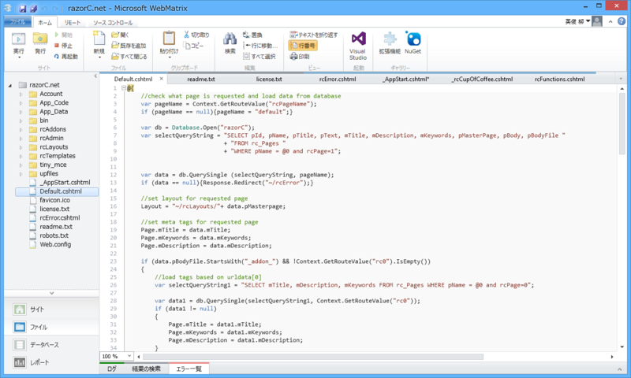

Razor で組まれた CMS「razorC.net CMS」
公開日：

ASP.NET Web Pages（razor syntax）で開発された CMS で、WebMatrix で開いていろいろ改造できるみたい。
実際に WebMatrix で動かすとこんな感じ。

機能的には割と普通というか、自動バックアップ機能とテーマ機能、レイアウトエディターが気になる程度。
ちょっと面白いなと思ったのはコレ。
// _AppStart.cshtml@using System.Web.Routing
@{ RouteTable.Routes.MapWebPageRoute( "{rcPageName}/{rc0}/{rc1}", "~/Default.cshtml", new { rcPageName = "default", rc0=-1, rc1=-1 } ); }
別に規約ベースのルーティングを無理して使う必要はなかったんだな。言われてみればそうなのだろうけれど、割りと目から鱗だった。